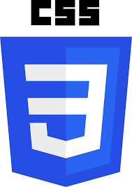

Sobre Mi:
Me llamo Magalí Escuderoy voy a 3°E en Colegio Calasanz en Buenos Aires, Argentina. Mis hobbies favoritos son escuhar música, leer y mirar series y peliculas.
Me llamo Magalí Escuderoy voy a 3°E en Colegio Calasanz en Buenos Aires, Argentina. Mis hobbies favoritos son escuhar música, leer y mirar series y peliculas.
Esta pagina se trata de una evaluación para la materia de informática, donde yo creo mi pagina personal para aplicar todos mis conocimientos. Estamos aprendiendo a construir páginas web usando HTML y CSS en Visual Studio Code.


